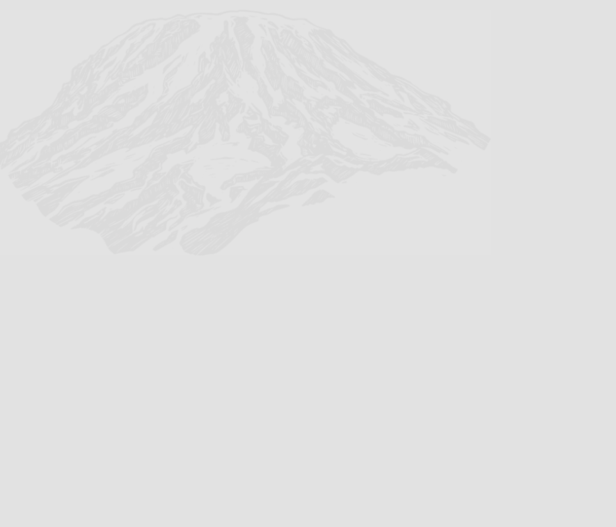

Story
Le mont Kilimandjaro est un ancien volcan formé il y a plus d’un million d’années par l’activité tectonique de la vallée du Rift. Longtemps sacré pour les peuples Chagga et Masaï, il est resté hors d’atteinte des explorateurs jusqu’au XIXᵉ siècle. Sa première ascension documentée a lieu en 1889, réalisée par Hans Meyer et Ludwig Purtscheller, marquant son entrée dans l’histoire de l’exploration africaine. Symbole naturel majeur de la Tanzanie, il est aujourd’hui protégé par un parc national et classé au patrimoine mondial de l’UNESCO.